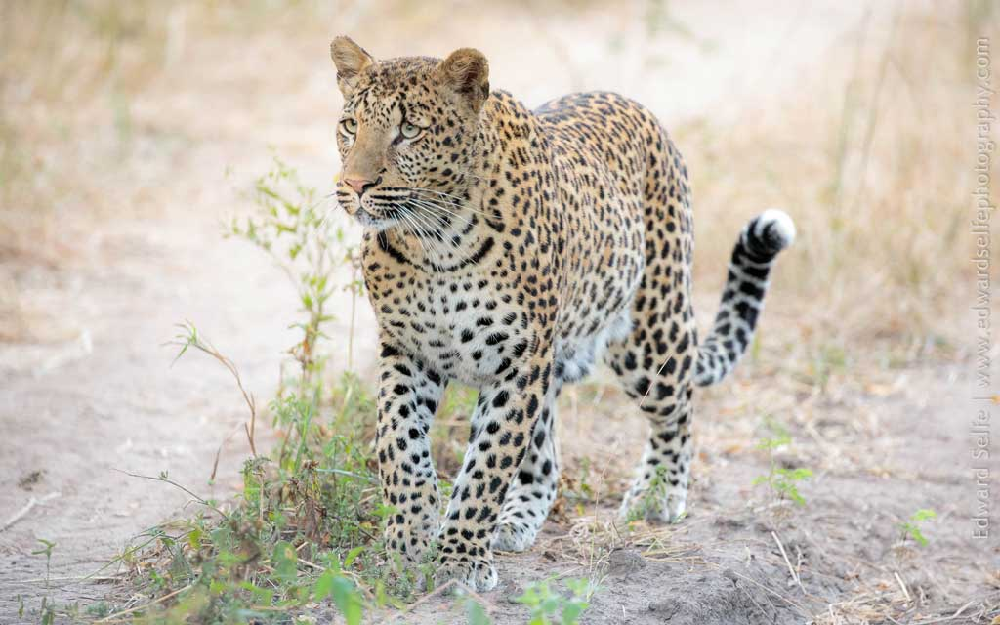
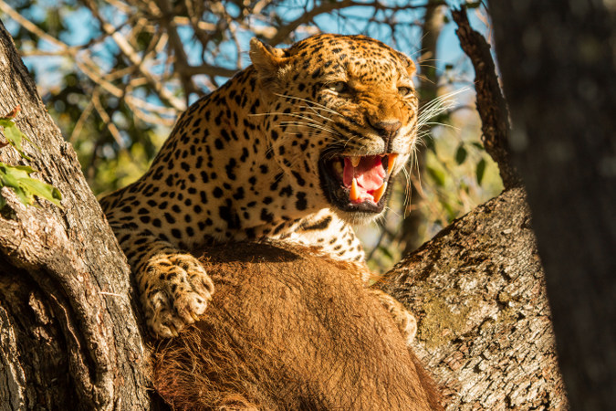
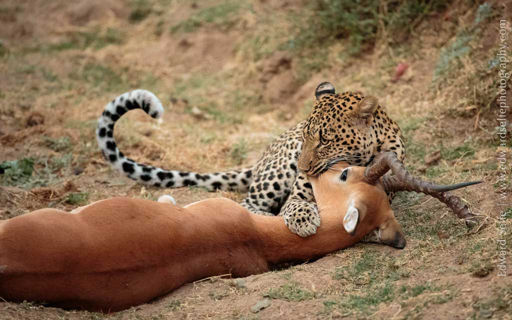
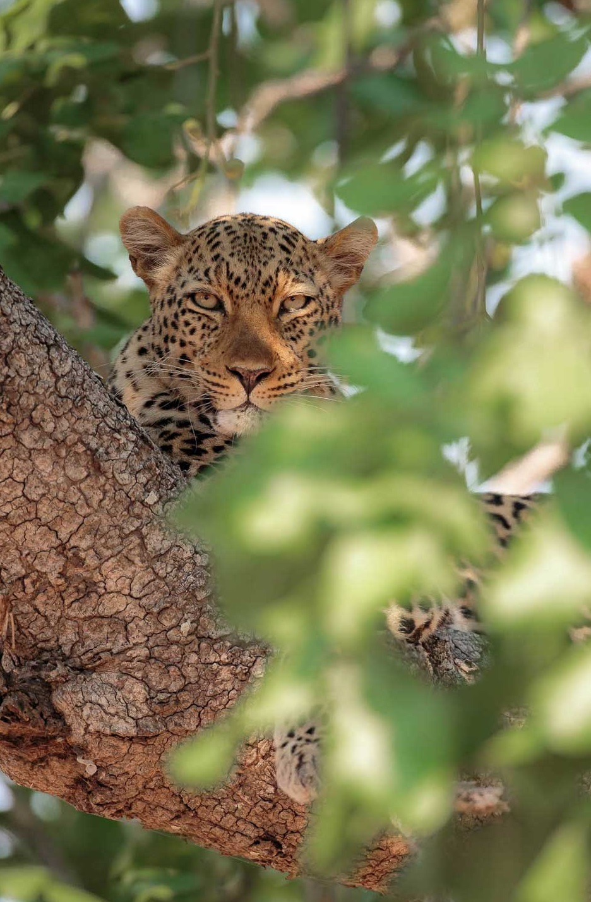

|
非洲豹(Panthera pardus pardus)
是豹的亞種之一，主要分布於非洲，其中大部份分布於撒哈拉以南非洲。  外型特徵
肩高60-70厘米，重50-90千克。全身都布滿了花形的圖案和斑點，頭部的斑點小而密，背部的斑點密而較大。  主要威脅
最大的天敵是獅子，它們能殺死成年的非洲豹，鬣狗、獵豹等食肉動物會襲擊非洲豹的幼仔。  其他介紹
由於棲息地的喪失以及為貿易和病蟲害防治而進行的狩獵，豹的數量在其部分地理範圍內正在下降。 所以，豹在IUCN瀕危物種紅色名錄中被列為“近危”。 豹似乎顯示出對較小的棲息地干擾的抵抗力，並且對人類具有相對的耐受力。 目前，豹在西亞的大部分地區都受到保護； 但是，這一範圍內的人口太少，無法維持穩定的增長。 儘管非洲各地都有棲息地保護區和國家公園，但大多數豹都生活在這些保護區之外。 儘管豹是“大貓”中人口最多的物種，但9個亞種中有5個被列為瀕危或極度瀕危。 
|